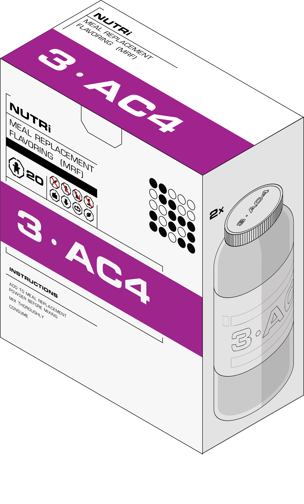
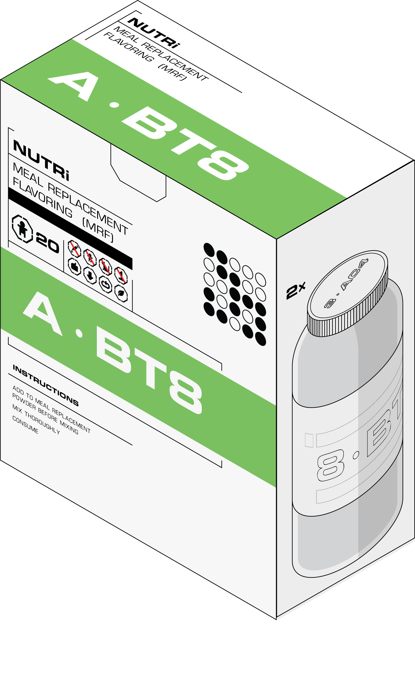
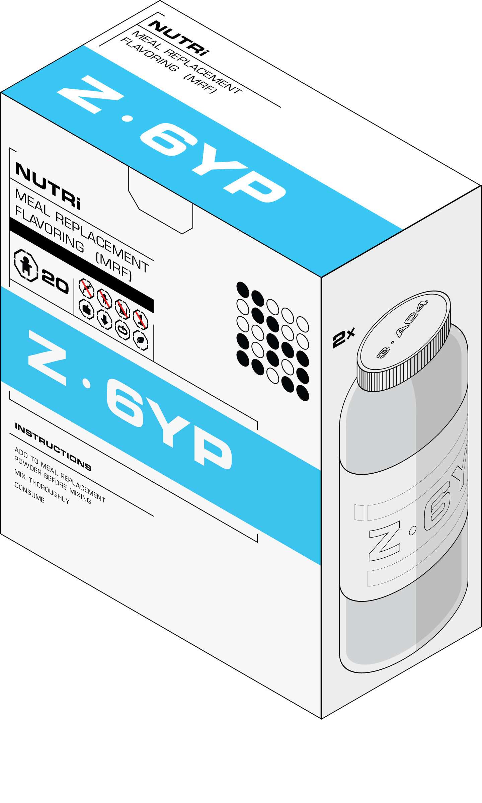
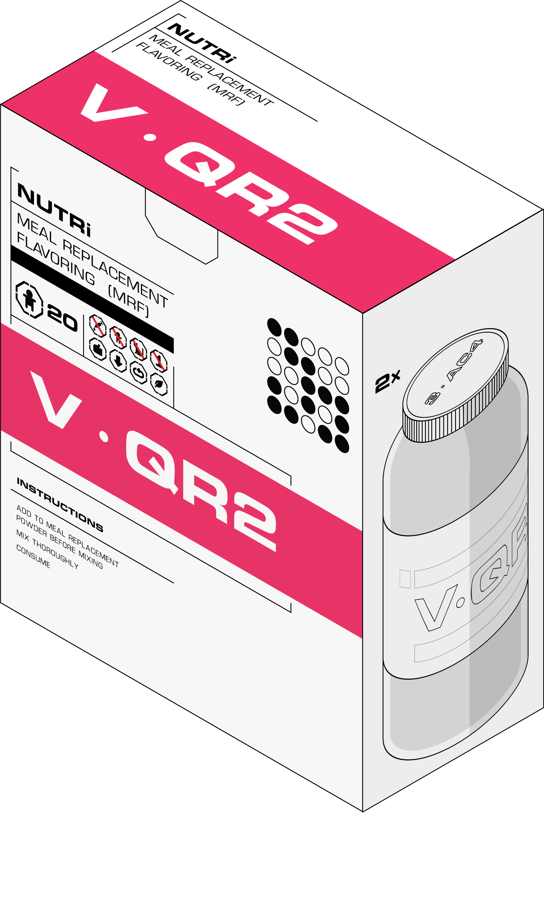
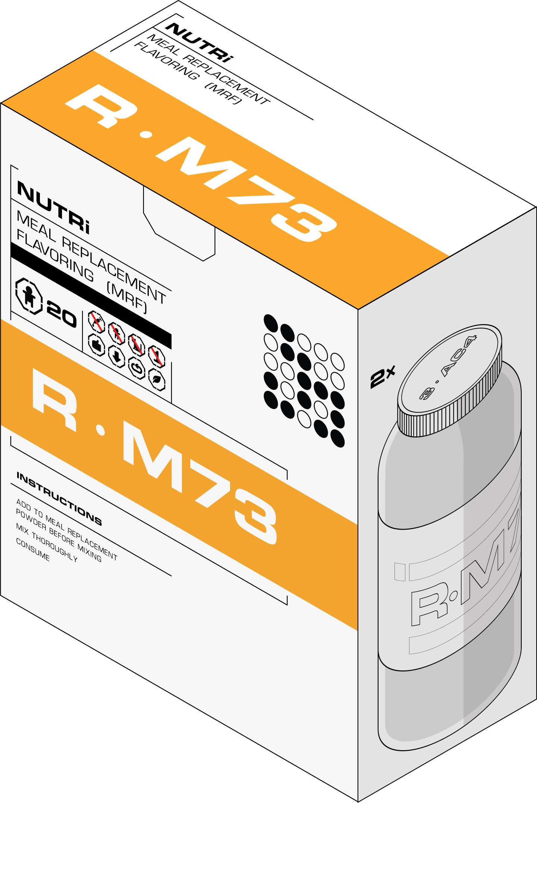

Top 5 MRFs for Breakfast
The following text is a transcript from Daily5.news copied on 6/11/50. Any edits made to this text since the copy date have not been updated here and should be viewed at the live site.
Published 5/3/50
Sponsored by NUTRi™
For most of us we find certain meal replacement flavors (MRFs) that we like and stick to them. For many people this works great, but for our readers who like to have more structure in their days we are exploring MRFs you can use for meal times. What are meal times? Meal times used to be very common in the US up to the 2030s where certain times of the day would be set aside for eating. Each time period would have a repertoire of appropriate food items and appropriate way of preparation. For instance, a glass of orange juice and a piece of toast topped with butter spread might have been appropriate for breakfast but not for dinner. Similarly, pasta with tomato sauce might have been appropriate for dinner but not for breakfast. In our 3-part series of listicles, we are bringing you our top 5 MRFs for each meal time. To help us out, our sponsor for this series, NUTRi™, has hooked us up with their entire collection of 127 MRFs for us to taste test.
3·AC4
Descriptors: Sweet, Caramelly
The first item on our list is the 3·AC4 which we picked out because we thought it closest resembled waffles topped with maple syrup. Try microwaving your MR a bit after mixing if you want to get as close to the authentic waffle experience.
A·BT8
Descriptors: Sweet, Fruity
Fruit smoothies were a huge part of breakfast culture and were possibly the closest thing to MRs before MRs were commonplace. They mostly consisted of fruits and leafy vegetables blended into a slurry, hence why we chose this flavor with the sweet and fruity tastes of bananas and strawberries. After mixing, add in a couple ice cubes or let it sit in the fridge to get a refreshing drink to start off the day.
Z·6YP
Descriptors: Savory, Garlicy
On the savory side we found the Z·6YP to best resemble the taste of a breakfast sausage. This may have been the strongest tasting savory flavor and tasted like a heavily spiced piece of seitan. And while you can't sizzle this MR on a skillet, you can microwave it after mixing to improve the experience.
V·QR2
Descriptors: Sweet, Tart
The V·QR2 tastes a lot like a blueberry pancake... batter. The tart taste is one we do not usually see in these MRFs which is why this one stood out to us.
R·M73
Descriptors: Citrus, Fruity
There was nothing like a refreshing glass of orange juice to complete a breakfast. A chilled glass of R·M73 gets pretty dang close to this feeling. It tastes fruity but not too sweet.